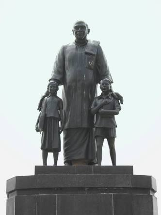

Virudhunagar District is an administrative district of Tamil Nadu state in southern India. Virudhunagar is the district headquarters. Virudhunagar district was formed by the separation of Old Ramanathapuram District on 1987 into Ramanathapuram District, Sivagangai District and the west part as Virudhunagar District. Virudhunagar District was formerly called Karmavirer Kamarajar District.

From the 19th century AD, District Collectors and Judges appointed by the British controlled the area. In 1910, the District of Ramanathapuram was created for reasons of administrative convenience, by carving-out territories from Madurai and Tirunelveli Districts. In 1948, after India attained independence, the zamins were abolished. In 1980, the Ramanathapuram District was trifurcated to create the districts of Ramanathapuram, Pasumpon Muthuramalinga Thevar Tirumagan(later renamed Sivaganga) and Kamarajar District (later renamed Virudhunagar District). The District headquarters is Virudhunagar town. It covers an area of 4232 sq. km. and is divided into 8 taluks, namely Aruppukkottai, Kariapatti, Rajapalayam, Sattur, Sivakasi, Srivilliputur, Tiruchuli and Virudhunagar.